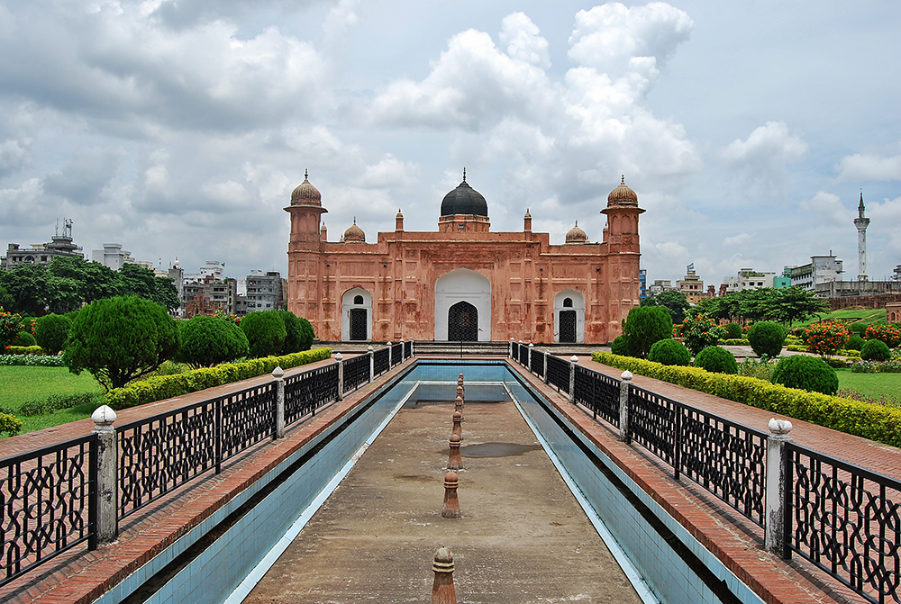
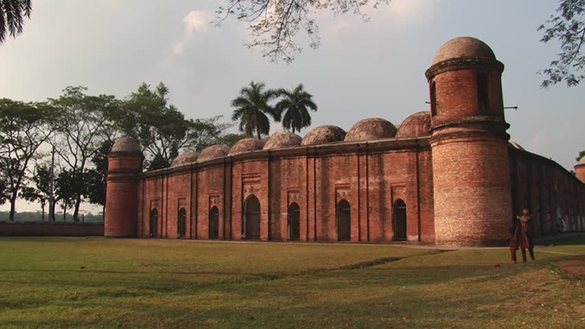

Lalbagh Fort is the most popular and renowned fort and a great signature of art by Mughal Empire in Bangladesh. It is also known as Fort Aurangabad. It is located in Lalbagh of old Dhaka, hence named so. It is situated by the bank of the river Buriganga in a rich red soil.
History of Lalbagh Fort
Lalbagh fort is an incomplete structure by a Mughal prince and later emperor himself named Muhammad Azam(third son of Aurangabad). He started the work of the fort in 1678 during his vice-royalty in Bangladesh(Previous Bengal). He stayed in Bengal for 15months. It remained incomplete when he was called by his father Aurangabad to the capital Delhi
Shaista khan was the new Subedar(Governor) of Dhaka in that time, and he didn't complete the fort. In 1684, the daughter of Shaista khan named Iran Dukh(Pari Bibi)died there. After her death, he started thinking the fort as ominous, and left the structure incomplete. Among the 3 major parts of Lalbagh Fort, one is the tomb of Pari Bibi.
After Shaista khan left Dhaka, it lost its popularity. The main cause was that the capital was shifted from Dhaka to Murshidabad. After the end of royal Mughal period, the fort became abandoned. In 1844, the area achieved its name as Lalbagh replacing Aurangabad, so the fort as Lalbagh Fort.
The Sundarbans is a vast forest in the coastal region of the Bay of Bengal and considered one of the natural wonders of the world. It was recognised in 1997 as a UNESCO World Heritage Site of Bangladesh. Located in the delta region of Padma, Meghna and Brahmaputra river basins, this unique forest extends across Khulna, Satkhira, Bagerhat districts of Bangladesh and South 24 Parganas, North 24 Parganas districts of West Bengal, India.
as a UNESCO World Heritage Site of Bangladesh. Located in the delta region of Padma, Meghna and Brahmaputra river basins, this unique forest extends across Khulna, Satkhira, Bagerhat districts of Bangladesh and South 24 Parganas, North 24 Parganas districts of West Bengal, India.
The Sundarbans contain the world's largest coastal mangrove forest, with an area of about 10,000 km2 (3,900 sq mi), of which about 6,000 km2 (2,300 sq mi) are located in Bangladesh and about 4,000 km2 (1,500 sq mi) in India.
The Bangladeshi and Indian parts of the Sundarbans, while in fact adjacent parts of the uninterrupted landscape, have been listed separately in the UNESCO World Heritage List: as Sundarbans and Sundarbans National Park respectively. It is the world's largest delta.
The Sundarbans is a network of marine streams, mud shores and mangrove forests. The region is known to contain numerous wildlife species, birds and reptiles, including Bengal tiger, chital, crocodile, snakes. Since 21 May 1992, the Sundarbans is recognized as a Ramsar Site of ecological importance.
Etymology
The name Sundarban can be literally translated as "beautiful forest" in the Bengali language (Shundôr, "beautiful" and bôn, "forest"). The name may have been derived from the Sundari trees (the mangrove species Heritiera fomes) that are found in Sundarbans in large numbers. Alternatively, it has been proposed that the name is a corruption of Samudraban, Shomudrobôn ("Sea Forest"), or Chandra-bandhe (name of a primitive tribe). However, the generally accepted view is the one associated with Sundari or Sundri trees.
National Martyrs’ Memorial (Bengali: জাতীয় স্মৃতি সৌধ Jatiya Smriti Saudha) is the national monument of Bangladesh, set up in the memory of the valour and the sacrifice of all those who gave their lives in the Bangladesh Liberation War of 1971, which brought independence and separated Bangladesh from Pakistan. The monument is located in Savar, about 35 km north-west of the capital, Dhaka. It was designed by Syed Mainul Hossain.
those who gave their lives in the Bangladesh Liberation War of 1971, which brought independence and separated Bangladesh from Pakistan. The monument is located in Savar, about 35 km north-west of the capital, Dhaka. It was designed by Syed Mainul Hossain.
History
Plans for the monument were initiated in 1976. Following the site selection, road and land development, a nationwide design competition was held in June,1978. Following evaluation of the 57 submissions, Syed Mainul Hossain's design was chosen. The main structure and the artificial lake and other facilities were completed in 1982. It was Inaugurated at 16 December 1982.
The architecture is composed of seven pairs of triangular-shaped walls or prisms; the outermost pair being the shortest in height but widest in span, the inner pairs gradually change their aspect ratio and the innermost pair thus forms the peak point of the architecture. Each of these seven pairs of walls represents a significant chapter in the history of Bangladesh, namely the Language Movement in 1952, the Election of United Front in 1954, the Constitution Movement in 1956, the Education Movement in 1962, 6-point Movement in 1966, the Mass Uprising in 1969, and finally the climatic event of Liberation War in 1971, through which Bangladesh was liberated.
Finally in 1978 they started construction on the structure. In 1982 the structure was finally completed.
The Jatiya Sangsad ("National Parliament"; Bengali: জাতীয় সংসদ Jatiyô Sôngsôd), often referred to simply as the Sangsad or JS and also known as the House of the Nation, is the supreme legislative body of Bangladesh. The current parliament of Bangladesh contains 350 seats, including 50 seats reserved for women, which are apportioned on elected party position in the parliament. Elected occupants are called members of parliament or MP. The 10th National Parliamentary Election was held on 5 January 2014. Elections are held every five years unless the parliament is dissolved before that time.
is the supreme legislative body of Bangladesh. The current parliament of Bangladesh contains 350 seats, including 50 seats reserved for women, which are apportioned on elected party position in the parliament. Elected occupants are called members of parliament or MP. The 10th National Parliamentary Election was held on 5 January 2014. Elections are held every five years unless the parliament is dissolved before that time.
The leader of the party (or alliance of parties) holding the majority of seats becomes the Prime Minister of Bangladesh, and the head of the government. The President of Bangladesh, the ceremonial head of state, is chosen by Parliament. Since the December 2008 national election, the current majority party is the Bangladesh Awami League. It is led by Prime Minister Sheikh Hasina.
Parliament's powers are restricted by Article 70 of the Constitution of Bangladesh, which bans MPs from voting against their party or crossing the floor. MPs risk losing their seats if they turn against the party line. Hence, free votes and no-confidence motions to remove prime ministers have not been possible in the Bangladeshi parliament.
History
Further information: Legislatures of British India, Bengal Legislative Council, Eastern Bengal and Assam Legislative Council, Bengal Legislative Assembly, East Pakistan Provincial Assembly, and Constituent Assembly of Bangladesh
The Constituent Assembly of Bangladesh was established in 10 April 1972 after the Bangladesh Liberation War to prepare a democratic constitution and served as its first Parliament as an independent nation. The Assembly approved the Constitution on November 4, 1972, and it took effect on December 16 and the Constituent Assembly became the Provisional Parliament of Bangladesh until the first elections under the new Constitution took place in 1973.
Until 10 July 1981 the Constituent Assembly, the first and second Parliament held their sittings in the building that now houses the Prime Minister's Office and which is often referred as the old Sangsad Bhaban (old Parliament House). The opening ceremony of the present Parliament House was performed on 15 February 1982. The last session of the second Parliament was held in the new house on 15 February 1982.
Cox's Bazar (Bengali: কক্সবাজার, pronounced [kɔksbadʒaɾ]) is a city, fishing port, tourism centre and district headquarters in Bangladesh. The beach in Cox's Bazar is sandy and has a gentle slope; with a unbroken length of 155 km (96 mi), it is the longest natural sea beach in the world. It is located 150 km (93 mi) south of the industrial port of Chittagong. Cox's Bazar is also known by the name Panowa, which Translates literally as "yellow flower." Another old name was "Palongkee".
with a unbroken length of 155 km (96 mi), it is the longest natural sea beach in the world. It is located 150 km (93 mi) south of the industrial port of Chittagong. Cox's Bazar is also known by the name Panowa, which Translates literally as "yellow flower." Another old name was "Palongkee".
The modern Cox's Bazar derives its name from Captain Hiram Cox (died 1799), an officer of the British East India Company. Cox was appointed Superintendent of Palongkee outpost after Warren Hastings became Governor of Bengal. He embarked upon the task of rehabilitating refugees in the area and made significant progress[clarification needed].
Captain Cox died in 1799 before he could finish his work. To commemorate his role in rehabilitation work, a market was established and named Cox's Bazar after him. Unlike many locations in the Indian Subcontinent where name places dating from the colonial period have been changed, Cox's name is up to the present retained in the city he founded.
Today, Cox's Bazar is one of the most visited tourist destinations in Bangladesh, although not a major international tourist destination. In 2013, the Bangladesh Government formed the Tourist Police unit to protect local and foreign tourists better, as well as to look after the nature and wildlife in the tourist spots of Cox's Bazar.
In 2017, the Kutupalong refugee camp for Rohingya people escaping from Myanmar opened near Cox's Bazar.
St. Martin's Island (Bengali: সেন্ট মার্টিন্স দ্বীপ) is a small island (area only 8 km2) in the northeastern part of the Bay of Bengal, about 9 km south of the tip of the Cox's Bazar-Teknaf peninsula, and forming the southernmost part of Bangladesh. There is a small adjoining island that is separated at high tide, called Chera Dwip. It is about 8 kilometres (5 miles) west of the northwest coast of Myanmar, at the mouth of the Naf River.
and forming the southernmost part of Bangladesh. There is a small adjoining island that is separated at high tide, called Chera Dwip. It is about 8 kilometres (5 miles) west of the northwest coast of Myanmar, at the mouth of the Naf River.
The first settlement started 250 years ago by Arabian sailors who named the island 'Jazeera'. During British occupation the island was named St. Martin Island. During the First Anglo-Burmese War between the British and Burmese empires in 1824–1826, rival claims to the island were a major factor.
The local names of the island are "Narikel jinjira" which means 'Coconut Island' in Bengali, and "Daruchini Dwip" which means "Cinnamon island" in Bengali. It is the only coral island in Bangladesh
Kuakata (Bengali: কুয়াকাটা) is a town known for its panoramic sea beach. It is in southeastern Bangladesh and is the number two tourist destination in the country. Kuakata beach is a sandy expanse 18 kilometres (11 mi) long and 3 kilometres (1.9 mi) wide. From the
beach one can have an unobstructed view of both sunrise and sunset over the Bay of Bengal.
Kuakata beach is a sandy expanse 18 kilometres (11 mi) long and 3 kilometres (1.9 mi) wide. From the
beach one can have an unobstructed view of both sunrise and sunset over the Bay of Bengal.
Etymology
The name Kuakata originated from the word 'kua' — the Bengali word for "well" which was dug on the seashore by the early Rakhine settlers in quest of collecting drinking water.[4] They landed on the Kuakata coast in the 18th century after being expelled from Arakan (Myanmar) by the Mughals.[5] Afterwards, it has become a tradition of digging wells in the neighbourhoods of Rakhaine tribes for water.
The Sixty Dome Mosque (Bengali: ষাট গম্বুজ মসজিদ Shaṭ Gombuj Moshjid; more commonly known as Shait Gambuj Mosque or Saith Gunbad Masjid), a UNESCO World Heritage Site, is a mosque in Bangladesh, the largest in that country from the Sultanate period. It has been described as "the most impressive Muslim monuments in the whole of the Indian subcontinent."
History
In the middle of the 15th century, a Muslim colony was founded in the mangrove forest of the Sundarbans, near the coast in the Bagerhat District by a saint-General, named Khan Jahan Ali. He preached in an affluent city during the reign of Sultan Nasiruddin Mahmud Shah, then known as 'Khalifalabad'.
Khan Jahan adorned this city with more than a dozen mosques, the ruins of which are focused around the most imposing and largest multi-domed mosques in Bangladesh, known as the Shait-Gumbad Masjid (160'×108'). The construction of the mosque was started in 1442 and it was completed in 1459. The mosque was used for prayers, and also as a madrasha and assembly hall.
Location
It is located in Bagerhat district in southern Bangladesh which is in Khulna Division. It is about 3 miles far from the main town of Bagerhat. Bagerhat is nearly 200 miles away from Dhaka which is the capital of Bangladesh.